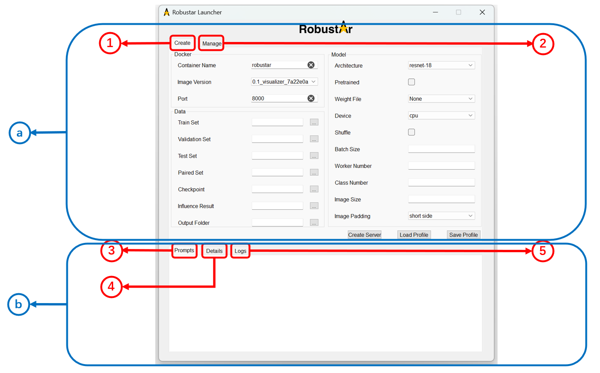
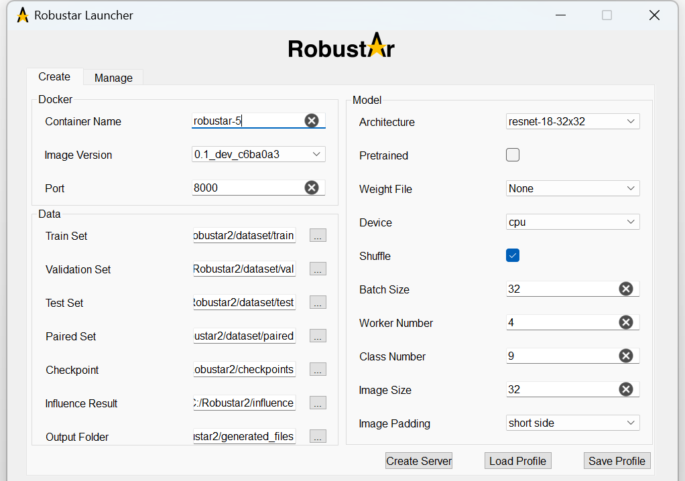

Introduction
Robustar Launcher is an interactive app that you can use to control docker containers of Robustar. You can either run the executable file provided here or the code of it to use it.
Contents
Overview of Robustar Launcher
Robustar Launcher is shown below.

It has three major functional partitions.
Partition 1 contains 5 interactive buttons respectively used to save or load the profile of the server(i.e. the docker container of Robustar), and start, stop or delete the server.
Partition 2 is a tab widget containing two tab pages, ’Create’ tab page and ’Manage’ tab page:
Createtab page is for inputting information necessary for the creation of a new Robustar docker container.Managepage if for monitoring the existing containers of Robustar.
Partition 3 is for displaying all the output of the launcher. Depending on the simplicity, the output is displayed differently in the three tab pages:
Prompttab page is for the simplest prompt given by the launcher program, telling users about whether an operation is carried out successfully.Detailstab page is for outputting more detailed information about some failures encountered during an operation, which will not be displayed in the ’Prompt’ tab page.Logstab page is the most detailed, allowing users to check all logs redirected from the container.
Starting Robustar Launcher
To run Robustar Launcher. You can either run the executable file or the code to use it. But first you must ensure that few prerequisites are satisfied. See here for more information.
For running:
- If you are using the executable file, just double click it and run.
- If you are using the code, open a terminal under the directory
launcher/in the project source code and run the command: python app.pyWhen you start Robustar Launcher successfully, its initial interface appears as shown below containing all the functions required to interact with docker containers of Robustar.

Using Robustar Launcher
Here is an outline of the various functions of Robustar Launcher:
- Creating new docker container of Robustar
- Checking existing docker containers of Robustar
- Managing existing docker containers of Robustar
- Checking container logs
- Saving and loading profile
Detailed instructions of these functions will be provided in turn below.
Creating new docker container
The process can be summarized into the following steps:
- Fill in all information in the
Createtab page (some have default values). - Click the
Start Serverbutton. - Check the output in the
Prompttab page to see if the operation is carried out successfully.
The operation might not finished immediately so it could take some time for you to see the output, especially when it is your first time using the selected docker image.
Weight File can only be selected under the directory of Checkpoint. Once you have set the Checkpoint directory, all available weight files under it will be automatically listed in Weight File combo box, from which you can select one to initialize your model.
Checking existing docker containers
You can check all existing containers of Robustar in Manage tab page categorized by their states as shown below.

There are three states of containers which we concern:
Runningcontainers are currently working.Exitedcontainers have exited from running state.Createdcontainers were created, but never had chance to run (most likely due to port conflict).
Since the lists update in response to user interaction, when a change happen in the background, they will not be aware of it. On such occasion, you can press the Refresh button on the bottom right corner of the tab page to enforce an update of the lists.
Managing existing docker containers
There are three types of management operations, starting, stopping and deleting a server(i.e. a docker container of Robustar), corresponding to the three buttons Start Server, Stop Server and Delete Server on the left hand side. They share the same operation logic:
- Click to select a container from the lists in the ’Manage’ tab page. A container will be highlighted if selected.
- Click the corresponding button (
Start Server/Stop Server/Delete Server). - Check the output in the
Prompttab page to see if the operation is carried out successfully.
The operation might not finished immediately so it could take some time for you to see the output.
We also support specifying container to be operated on with the container name inputted when you are in Create tab page. That means when you are in ’Create’ tab page, you can also manage containers by clicking those buttons, and the container with the name you input in Docker Container Name will be operated. However, we suggest you to do so only under one condition, that is when you want to manage the container you just created. In other cases, it would be a better practice to manage the containers in Manage tab page.
Checking container logs
You can check the full logs of the running container in the Logs tab page as shown below.
Currently the launcher only supports showing logs of the most recently started container after the launcher is started. In other words, if a container has been running before the launcher is started, or another container is started after it, then its logs will not be displayed.
Saving and loading profile
You can save and load a profile(i.e. the setting in Create tab page) to save time from inputting duplicate information.
- To save a profile:
- Click the
Save Profilebutton on the left hand side. - Select a place in the pop-up window to save the profile as a
.jsonfile. - To load a profile:
- Click the
Load Profilebutton on the left hand side. - Select a
.jsonfile containing the profile.
Appendix
Prerequisites to run Robustar Launcher
To run Robustar Launcher, either the executable file or code, you must install and run the application Docker Desktop in your computer.
If you are using the code to run Robustar Launcher, in addition to the above requirement, you must install Python packges Pyside2 and docker in your Python interpreter.